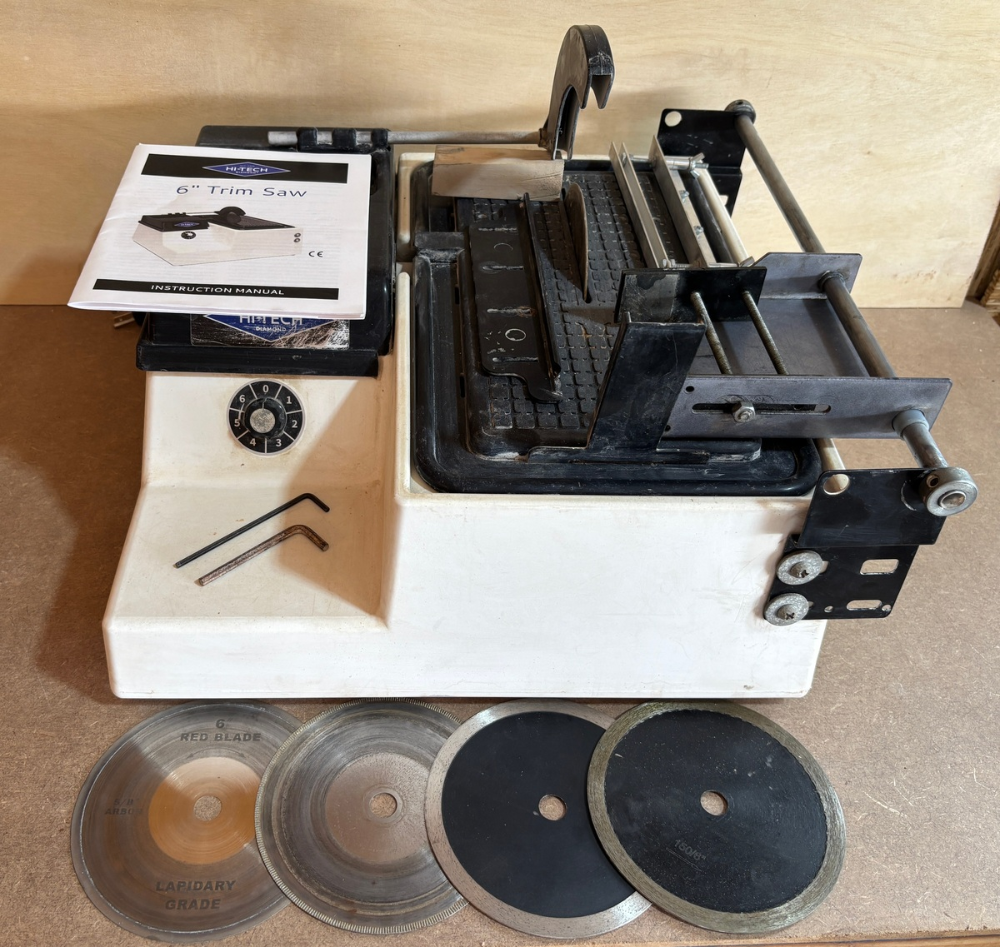
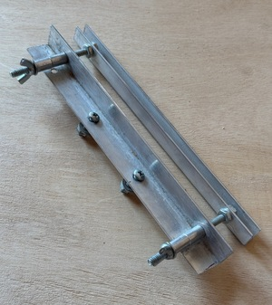

Bought this new a few years back. Works great.
Comes with three thick blades -- one mounted within the saw, and two more (black painted) sitting in front). There is also one thin (the 'red' blade) and one medium thickness blade. Thicker blades cut a straight line more easily but blow away more stone. Thinner blades cut faster and blow away less material, but are a bit harder to keep in a really straight line.
Also included: a home-brew cutting fence I made. Makes it easier to cut strips of a consistent width.

More info: